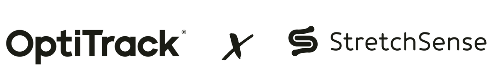
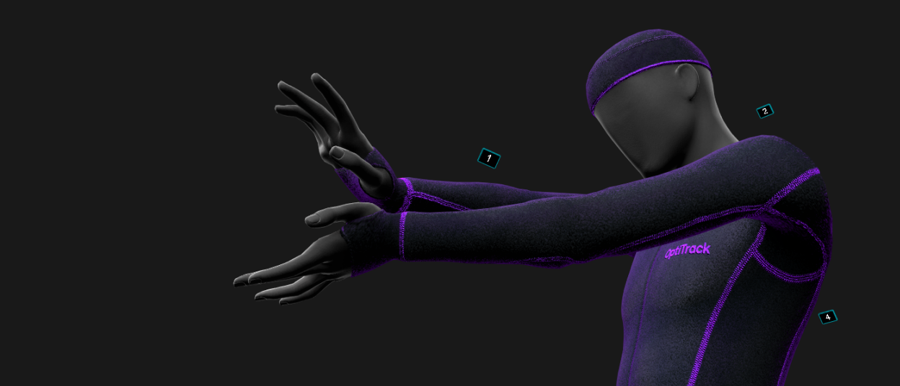
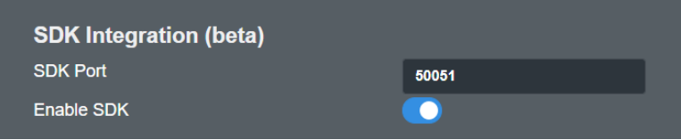
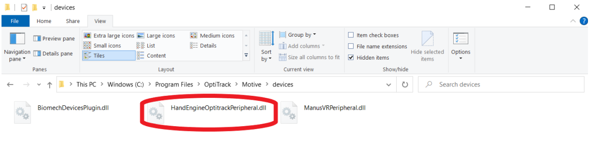
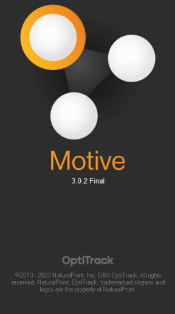
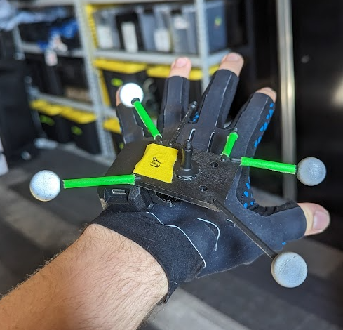
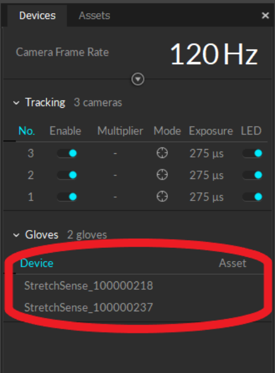
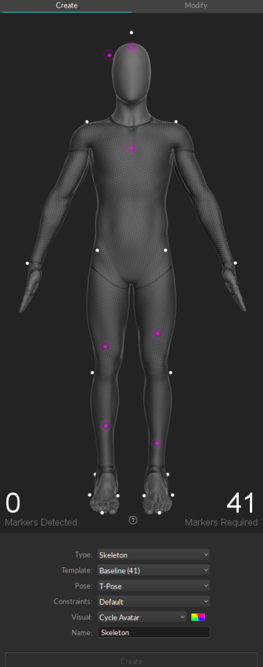
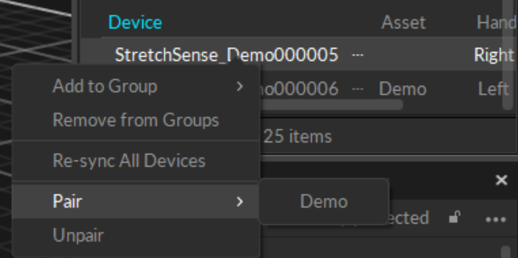
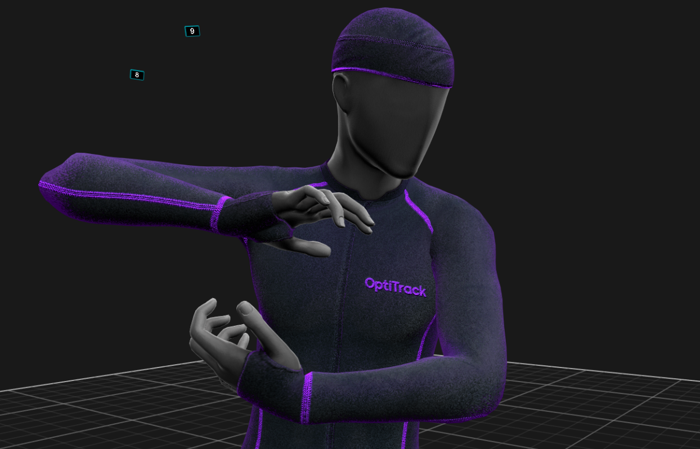

Requirements:
IMPORTANT:
When installing Motive 3.0.0 or 3.0.1, make sure also to select to install the Peripheral API during the setup process
Please do not use any beta version of Motive.
IMPORTANT:
If you are upgrading from Hand Engine 2.2.2 to Hand Engine 3 Pro, it is necessary to reinstall the plugin DLL that is linked on the StretchSense website.
- Operating System: Windows 10
- 4 markers per glove minimum are required
- Hand Engine 2 or Hand Engine 3 Pro
- Optional - MoCap suit and a full set of markers for full body capture.
Hand Engine SDK Setup
IMPORTANT:
Before using StretchSense gloves in Motive, please ensure all gloves have been paired, and calibrated and are able to report data from Hand Engine software.
This is a crucial first step for the successful use of StretchSense Gloves with Motive software.
- Start Hand Engine software
- Open the Edit -> Settings menu, and ensure that the “Enable SDK” switch is turned on. Keep “SDK Port” at 50051.

NOTE:
Port 50051 is the default port set up for the Motive plugin and cannot be adjusted. Please take note if you do have any other hardware that operates on the same port.
Installing the Motive Plugin
- On The Motive PC, Place the HandEngineOptitrackPeripheral_Release.DLL in this directory
“C:\Program Files\OptiTrack\Motive\devices”

- Run Motive (The initial run may take longer to boot as it initializes the Plugin for the first time.)

Setting up the glove markers
The hands in Motive require a minimum of 4x markers to be tracked. The StretchSense Studio gloves have a mounting kit to attach the OptiTrack Hand Rigid Body Marker Set.
Having the markers spaced out this way will help to ensure accurate tracking of the hand
position in the scene.

Setting up Motive:
- With Hand Engine running, Launch Motive. If the StretchSense gloves are properly set up in Hand Engine, then the connected and calibrated gloves will be listed under the motive Devices Pane
For more information about the Devices Pane, please see here

- Calibrate your OptiTrack system.
For more information on calibrating your Optitrack system, See here. - Create a Basic Skeleton in Motive. Use the Builder pane to define a Skeleton asset in Motive.
You can use any Skeleton model that is not designed to track fingers using motion capture data.
The recommended Skeletons models to use are the Core 50 or Baseline 41.

- Pair Skeleton with the device. Open the Devices Pane, under the Gloves Section.
You should see an entry for each connected glove in Hand Engine.
- Device Identifier: The devices created by Hand Engine come through in the following format:
- StretchSense_*Performer Name*_*Glove Serial*
- Each device is identified as Left or Right to make pairing easier.
- Right-click on each glove, click pair and select the created skeleton.

- Confirm the tracking. Once the gloves have been configured and paired with the created Skeleton, each Paired glove should now be streaming its data onto the Motive skeleton and the fingers will be tracking in Motive.
